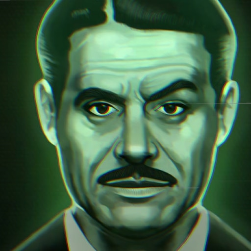

Page 3
Fallout: New Vegas
| -- Date Released -- |
-- Developer -- |
-- Director -- |
-- Genre -- |
| October 19, 2010 |
Obsidian Entertainment |
Josh Sawyer |
Action, Role-Playing |
- Fallout: New Vegas is the 4th installment in the Fallout series, the general storyline is that somewhere after World War 2
the game's timeline branches off from real life. Both technology and culture develop along different paths, and due to the transistor
never being invented in the series' timeline, everything has a sort of halcyon feel to it. During the middle of the 21st century, the
superpowers of the world begin to run out of fossil fuels, and some wage war or invade to secure more. It's unknown who fires first,
but on October 23rd, 2077, all of the great superpowers unleash their arsenal of nuclear weapons on each other. Referred to as, the
Great War, This event wipes out much of Earth's population and only the few humans secured in Vaults built around the country survive
the worst of the initial death and destruction.
- This installment takes place in 2281, 204 years after the Great War, and the player takes the role as the Courier, a person tasked
with delivering a Platinum poker chip to Mr. House, the man responsible for protecting Las Vegas from nuclear destruction. Before the
game starts, the Courier is taken prisoner and shot in the head by a strange man, who steals his chip. Miraculously surviving the
incident, the Courier sets out to find this man, recover the Platinum Chip, and on the way become embroiled with a conflict between
two major factions vying for control of the Hoover Dam.
- Often considered the best installment in the series, this game has a rich and interesting storyline and cast of characters,
and allows the player many ways to interact with ingame characters and factions.
